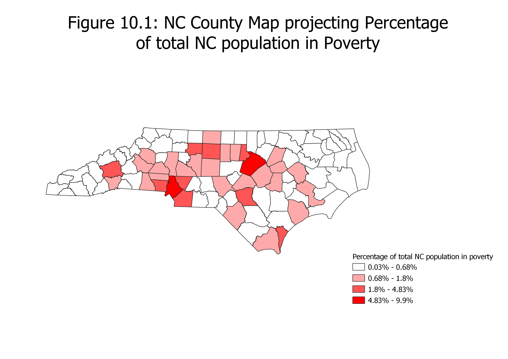
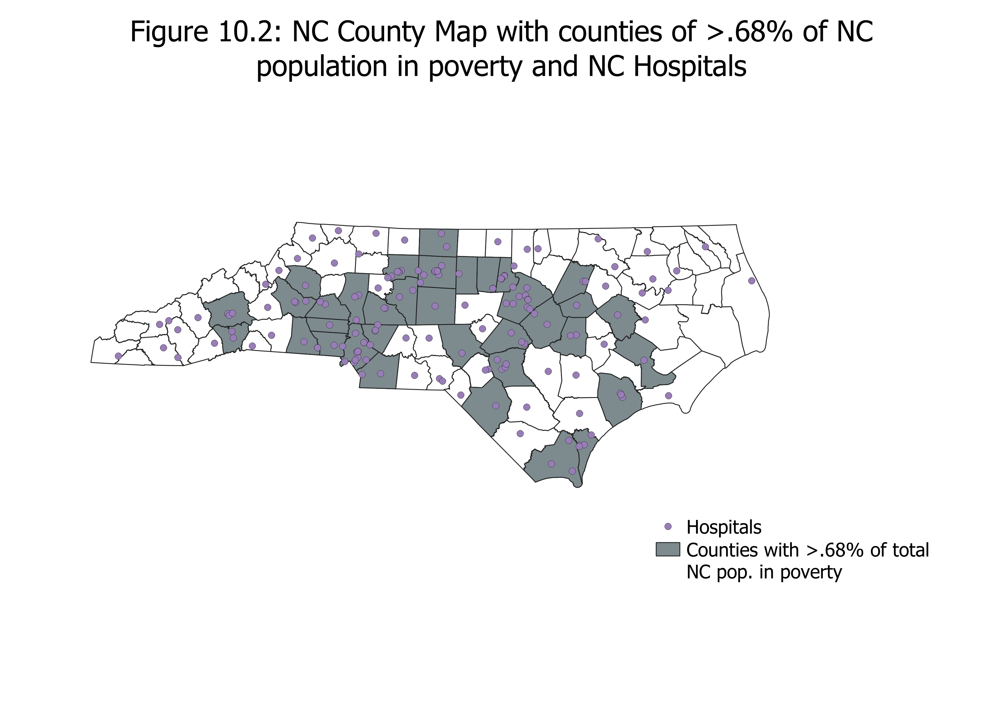
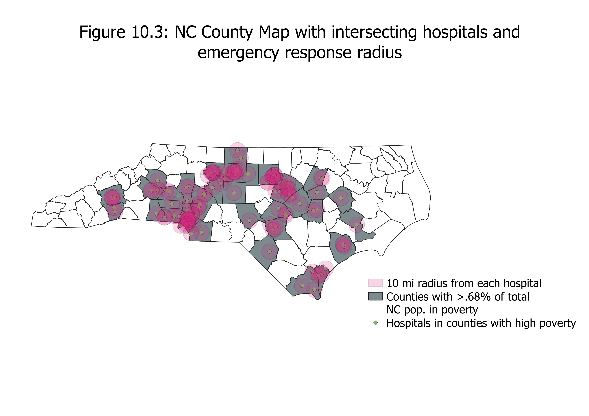
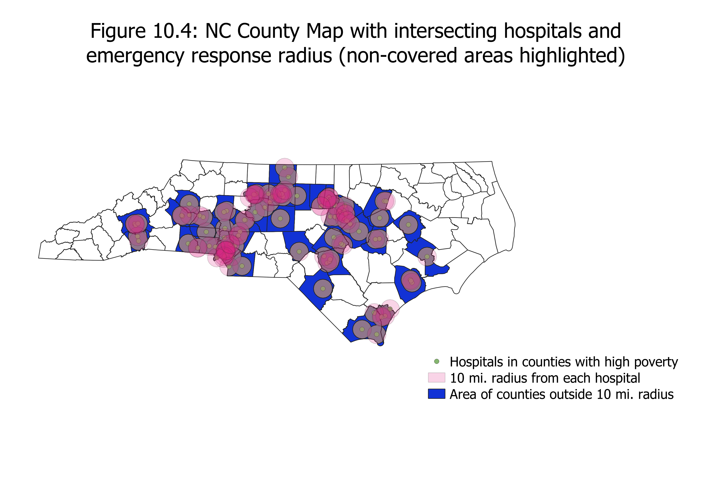
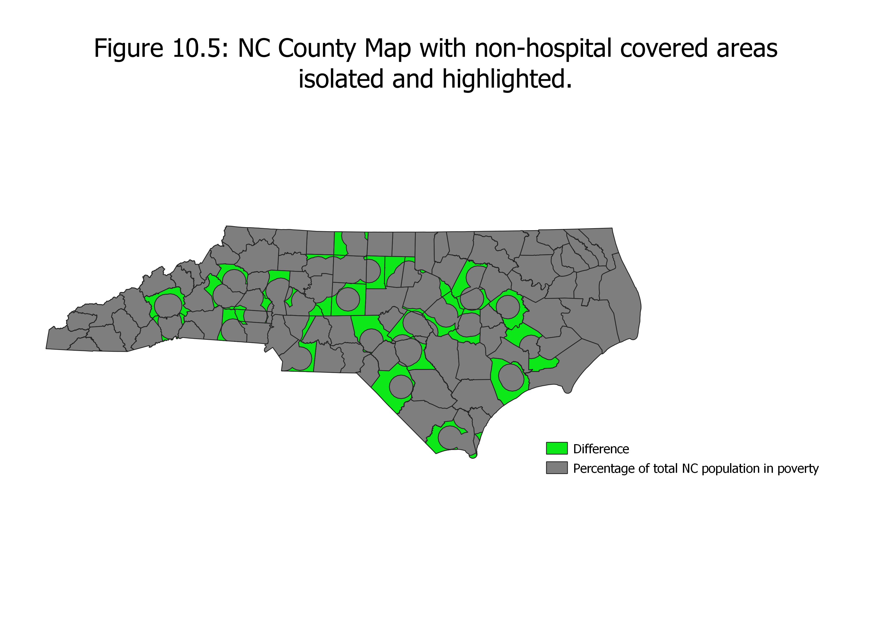

Homework 10: Geoprocessing Analysis
Davis Smith
For this project, I asked the question "What areas of counties with many impoverished individuals are not near hospitals?" I asked this question for a few reasons. This topic allowed me to get easily manipulable data. It also resulted in some interesting visual information. I also didn't see that one of the tutorial videos involved hospitals in point layers, so I wanted to do something extra to go beyond the scope of that tutorial and show creativity.

I started with a chloropleth map of North Carolina counties. I joined this county map with a census csv sheet that detailed poverty numbers per North Carolina county. I used a natural break classification and I used a ratio that divided the number of impoverished individuals per county by the total North Carolina population. Since I didn't normalize the data, population density still affects the results.

I then selected the counties that had a value higher than .68% and saved that as a seperate layer. I also added the North Carolina hospital point layer.

I then found the intersection of North Carolina hospitals and the isolated county layer. I added a buffer of 10 miles around the intersecting hospitals afterwards. I did 10 miles because of a study I found while researching for this project that showed how, for every roughly 5 miles increase in distance from a hospital, the chance of death turning transportation in an anbulence increases by 1%. I doubled the distance for visual interest.

I used the difference geoprocessor to highlight the areas of the isolated counties outside of this 10 mile radius.

Lastly, I displayed only the difference layer to show the exact area where hospitals are outside of a 10 mile range.
Data used for this project
NC Hospital Point Layer
Website for NC Hospital Point Layer
Cleaned csv dataset
Original csv dataset
Website for csv dataset
Website for study on emergency response-distance risk